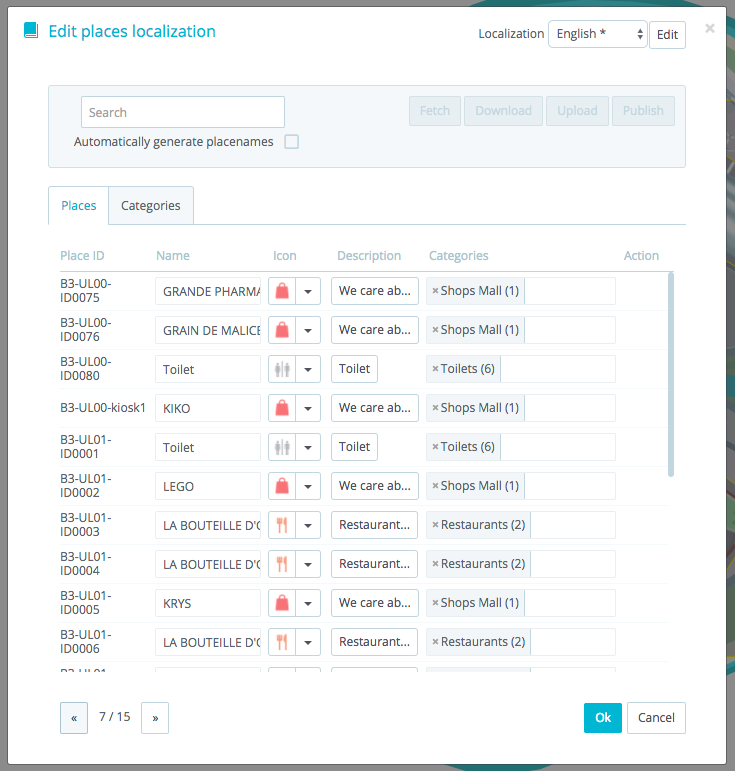
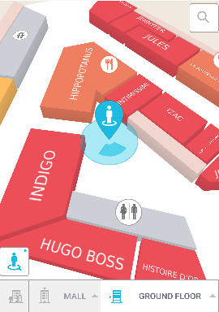

Localizing the SDK
You can override strings in VisioMove Essential for Android by providing a translation in your own strings.xml file for the desired locale.
The strings.xml file in the visiomoveessential/res/values/ directory contains all the strings that the SDK uses. The name of the string resources should be self-explainatory.
For more information, see Android Developer's Guide:Localizing with Resources
Localizing the venue
Venue content describes the venue (buildings and floors). The venue content can be modified from within VisioMapEditor, Settings->Properties->Buildings Edit. When the map is built, the venue content will be embedded in the map bundle and read automatically by the SDK.
- Note
- There are no APIs in the SDK for modifying the venue content. This must be done from within VisioMapEditor.
Localizing place data
The place data contains information related to the place id's within the map.
There are several ways that the place data can be injected into the SDK:
- Embed place data in the map bundle - The place data can be populated within VisioMapEditor by using the place data dialog window Settings->File->Edit Places. It's possible to either enter all the place names manually, or to check the "Automatically generate place names" check box and empty places will have their id assigned as the place names. When the map is built, the place data content will be embedded in the map bundle and read automatically by the SDK.

- Inject batch place data at start up - use the VMEPlaceInterface::updatePlaceData: selector to add place data associated with several place ids. This method should only be called within the notification VMEMapListener::mapReadyForPlaceUpdate:.
- Inject single place data at runtime - use the VMEPlaceInterface::setPlaceID:data: selector to update place data associated with a single place id.
- Note
- If a place hasn't been given a name, then it's considered empty and will not be clickable, routable, nor will it appear within the search view.
- When the place data is updated at runtime, it's application's responsibility to determine the appropriate locale for the current device.
Place data format
The expected format for the place data is as follows:
{
"places": {
"<id>": {
"name": "<string>",
"icon": "<string>",
"categories": [<string>],
"description": "<string>"
}
}
"categories": {
"<id>": {
"name": "<string>",
"icon": "<string>"
}
}
}
Place and category icon paths
As well as referencing icons; relative to the map bundle's resource directory and via http(s), it's also possible to reference icons embedded within the application such as drawables and assets.
- Drawables within the application
int resID = R.drawable.marker_cat_curious;
Uri lIconUri = Uri.parse(ContentResolver.SCHEME_ANDROID_RESOURCE + "://" +
getActivity().getResources().getResourcePackageName(resID) + '/' +
getActivity().getResources().getResourceTypeName(resID) + '/' +
getActivity().getResources().getResourceEntryName(resID));
JSONObject lPlaceData = null;
try {
lPlaceData = new JSONObject();
lPlaceData.put("name", "Drawable Icon");
lPlaceData.put("description", "<b>Drawable Icon</b> The icon comes from a drawable.");
lPlaceData.put("icon", lIconUri.toString());
} catch (JSONException e) {
e.printStackTrace();
}
- Drawables within the assets directory
Uri lIconUri = Uri.parse("file:///android_asset/marker_cat_alert.png");
JSONObject lPlaceData = null;
try {
lPlaceData = new JSONObject();
lPlaceData.put("name", "Asset Icon");
lPlaceData.put("description", "<b>Asset Icon</b> <hr> The icon comes from assets.");
lPlaceData.put("icon", lIconUri.toString());
} catch (JSONException e) {
e.printStackTrace();
}
Changing resources
It's possible to change the drawables packaged within VisioMoveEssetial.aar. When modifying a drawable, please respect it's name and pixel size (width x height). Follow the steps below:
- Extract the library contents
$ unzip VisioMoveEssential.aar -d tempFolder
- Modify the icons you would like to personalize.
- Archive the library
$ jar cvf VisioMoveEssential.aar -C tempFolder/ .
The customs icons and markers needs to have only 3 colours maximum which are :
- Red #ff0000 used as stroke color in the sdk
- Green #00ff00 used as foreground color in the sdk
- Blue #0000ff used as background color in the sdk
Example :
- Note
- VisioMoveEssential uses the following prefix when naming a drawable:
- "icon"(iOS)/"vme_icon"(Android)- used in the user interface
- "marker"(iOS)/"vme_marker"(Android) - added to the map's scene.
Theme the VMEMapView
It's possible to theme the VMEMapView, by adding a vg_app_theme.json file to the map bundle. To add it in the map bundle, please contact Visioglobe. Below is an example of the available attributes.
{
"version":2,
"_commentSystemDefault":"useSystemAsDefault = true allows to use system color and dark/light mode, this value can be overwritten in a theme definition",
"useSystemAsDefault":false,
"_commentThemes":"Theme list of the SDK, currently only \"light\" theme works in the SDK,
use hexadecimal colors for custom colors, \"system\" to force use system color (dark/light mode)
or use \"vg_default\" to use the SDK light mode default color",
"themes":{
"light":{
"colorPrimary":"#7a1ea1",
"colorPrimaryDark" : "#691a99",
"colorPrimaryLight" : "#b927d3",
"colorAccent" : "#68efad",
"colorAccentDark" : "vg_default",
"colorAccentInverse" : "system",
"textColorPrimary" : "#ffffff",
"textColorSecondary" : "#f3f3f3",
"buttonColorEnabled" : "vg_default",
"buttonColorEnabledInverse" : "vg_default",
"buttonColorDisabled" : "vg_default",
"buttonColorDisabledInverse" : "vg_default",
"buildingNormalPinBackground" : "vg_default",
"buildingNormalPinForeground" : "vg_default"
}
}
}
For a working example, check out the Basic demo, which reads the map bundle map_bundle_theme.zip or the Search demo, which reads the map bundle map_bundle_system_theme.zip.
Integrating location services
It's very easy to integrate a location service with the VisioMove Essential SDK. The interfaces::VMELocationInterface.updateLocation(VMELocation) API can be used to inject the users current location into the SDK.
private LocationListener mLocationListener = new LocationListener() {
@Override public void onLocationChanged(Location location) {
VMELocation lVMELocation = mMapView.createLocationFromLocation(location);
mMapView.updateLocation(lVMELocation);
}
@Override public void onStatusChanged(String provider, int status, Bundle extras) {}
@Override public void onProviderEnabled(String provider) {}
@Override public void onProviderDisabled(String provider) {}
};
Once the location has been injected into the SDK, the following behavior will automatically occur:
- An avatar (representing the location) will appear on the map
- If the injected location has a horizontal accuracy, then a disc representing the accuracy will be added to the avatar.
- When the place info view is displayed and the user clicks on the navigation button, the route will automatically be computed and displayed with the origin set to be the user's current location and the selected place as the destination.
- If the "location tracker button" is enabled via the application parameters, then it will be visible in the then a blue dot will appear in it's corner to indicate that a location has been received. The button will also become enabled. The location tracker button is a toggle button for activating/deactivating the location tracker. The location tracker will be deactivated automatically if the user interacts with the map. When activated, there will be the following behavior.
- The camera will start to track the user location. If the user changes floor/building, the camera will also change floor/building.
- The heading of the camera will be updated to correspond with the walking direction of the user.
- A cone indicating the facing direction of the device will be added to the base of the avatar.
